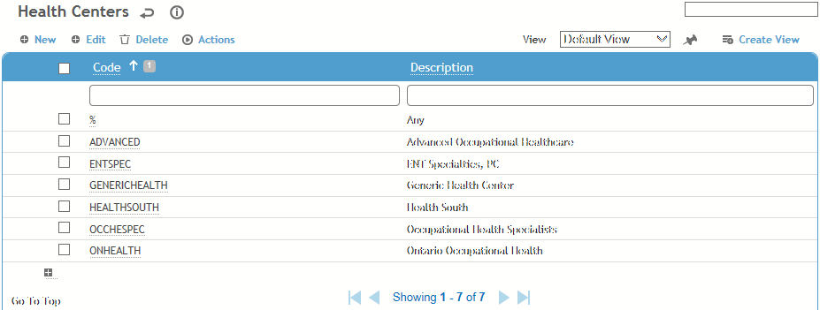
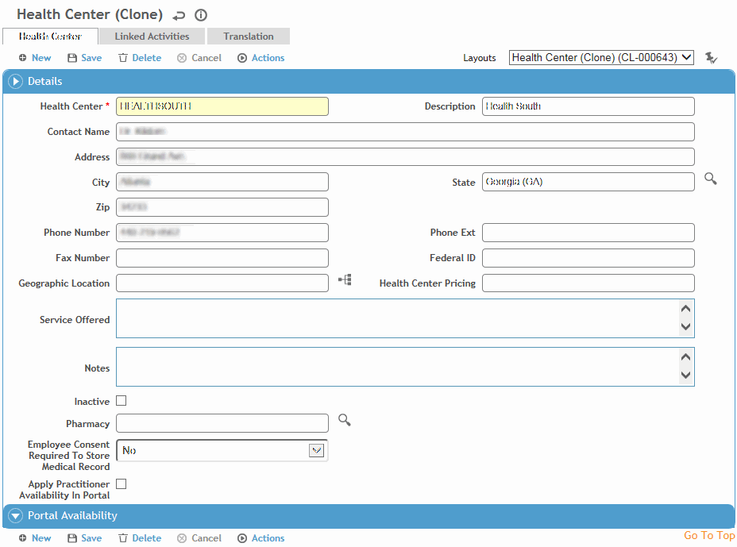
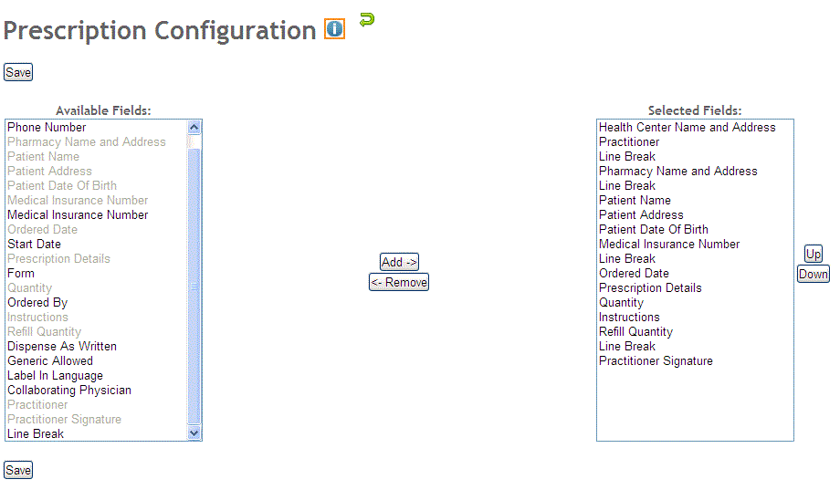

This table is used by many modules. It contains details about any health centers associated with your company. Each health center can have its own layout for prescriptions.
To filter the list of records, enter a few characters in one or more of the fields at the top followed by an asterisk, then press Enter.

Click a link to edit, or click New.

Enter the Code and Description and complete as many of the remaining fields as required. If your system settings are set to use the medical consent functionality, indicate if users for this health center require consent to access medical records.
In the Portal Availability section, define the available times that Portal users can schedule appointments.
To assist Portal users when scheduling, select Apply Practitioner Availability in Portal -- if the user tries to schedule an activity on a day that the practitioner does not have available time, you can choose to be shown the practitioner’s next available timeslot. The availability of a practitioner depends on: a) the practitioner tied to the schedule activity via the Linked Activities tab; b) practitioner's available time defined on the Linked Health Centers tab on the User table.
To configure the layout of the prescription form for all prescriptions written for this health center, choose Actions»Prescription Form Configuration.

On the left side, select the fields that you want to include on a prescription, and click Add to move them to the right. Note that there is an option to insert a line break to separate groups of fields. You can hold down the shift key to select multiple continuous fields, or the ctrl key to select multiple non-continuous fields.
On the right side, move selected fields up or down as required, or remove them.
To assign activities to this health center, click New on the Linked Activities tab and choose an activity (from the ScheduleActivity table).
Click Save.